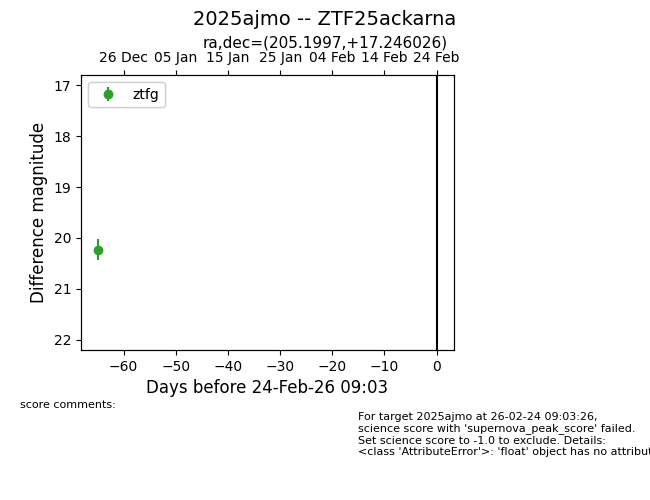
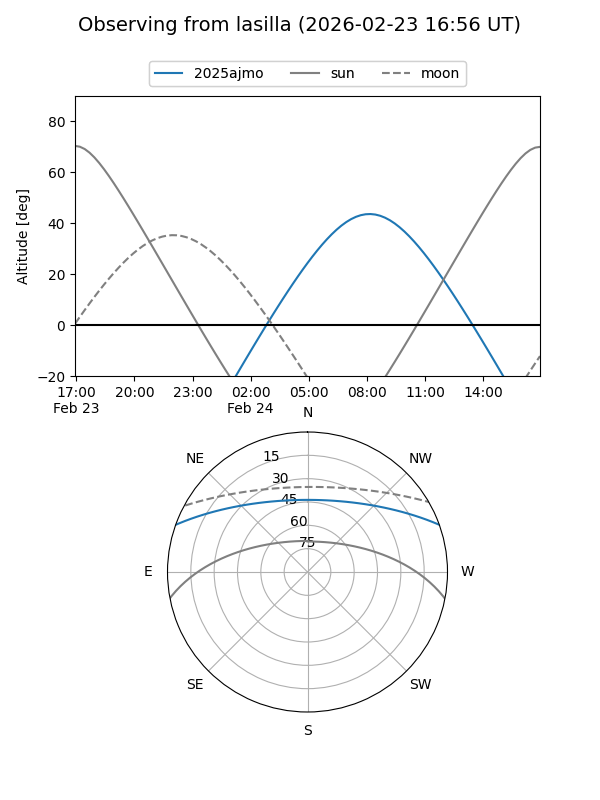
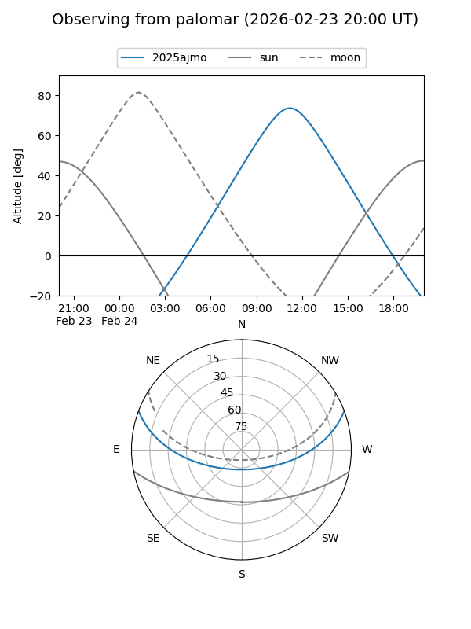

2025ajmo
Target 2025ajmo at 2026-01-09 12:49
Aliases and brokers:
FINK: link
Lasair: link
ALeRCE: link
TNS: link
YSE: link
alt names
ZTF25ackarna (ztf,fink_ztf)
2025ajmo (tns,yse)
Coordinates:
equatorial (ra, dec) = 205.1997,+17.24603
equatorial (HMS+DMS) = 13:40:47.94,+17:14:45.69
galactic (l, b) = (354.5685,+74.91141)
Flags:
Photometry:
last ztfg=20.23
1 ztfg detections
Lightcurve

Visibility


Additional plots